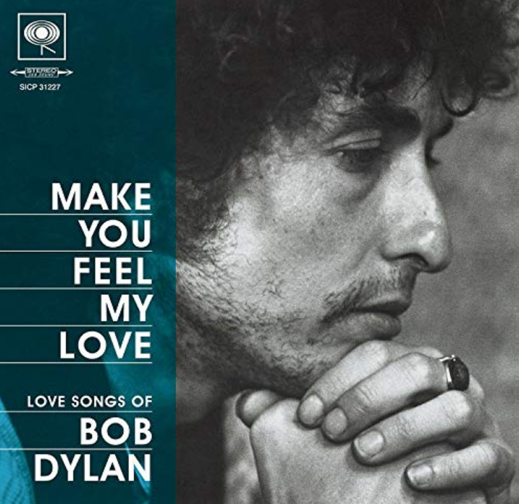

아델의 Make you feel my love는 누가 썼길래...?
게시: 2019-04-11T06:30:23+09:00
Make you feel my love라는 노래는 아주 전형적인 사랑 노래입니다. 구애를 하는 사람이 아직 주저하고 있는 상대방에게 '달도 별도 다 따다 줄게' 라고 약속하는 내용의 가사에요. 어떻게 보면 뻔하고 유치한 가사입니다. 하지만 이 노래는 아델의 보컬 외에 그 가사 자체에도 꽤 마음을 뭉클하게 하는 부분이 있습니다. 대부분의 좋은 노래들이 다 그렇듯이, 이 가사의 백미 역시 전체 곡이 80% 정도 진행된 후에 나옵니다. 바로 The storms are raging on the rolling sea and on the highway of regret 이라는 부분이지요. 사랑 노래에서 폭풍 치는 바다가 나오는 것은 놀랍지 않습니다만, 저는 저 on the highway of regret, 그러니까 후회의 고속도로라는 표현이 마음에 와 닿더라고요. 남녀간의 사랑은 쌍방 모두에게, 선택의 순간이 올 수 밖에 없습니다. 그리고 그 이후에는 그 선택의 결과를 받아들이는 과정이 이어지지요. 그런 과정에서 후회가 없는 사람이 과연 있을까요 ? 가보지 않은 길, 또는 이미 들어선 항로에 대해 사람은 누구나 회한이 있을 것 같습니다. 한참 구애하는 노래에서 the highway of regret 이라는 표현이 나오는 것은 인생을 살 만큼 살아보고 정말 많은 사랑을 겪어본 사람이나 해낼 수 있는 거라고 생각합니다. 특히 이 부분 바로 다음에, The winds of change are blowing wild and free, 즉 변심의 바람이 거칠고 제멋대로 불어댄다는 표현이 나오는 것은 정말 인생을 아는 사람이 지을 수 있는 가사에요.



이 멋진 곡을 지은 사람은 다름아닌 밥 딜런(Bob Dylan)입니다. 노벨문학상 수상자의 관록이 철철 묻어나지요 ? 이 양반이 직접 부르는 버전은 아래에서 보실 수 있습니다. https://youtu.be/z_yb_skMzdM 그리고 상업적으로 이 노래를 맨 처음 부른 사람은 노장 빌리 조엘(Billy Joel)입니다. 그 버전은 아래에서 감상하실 수 있습니다. https://youtu.be/vEQGKY92KI4 하지만 역시 강호의 앞물결은 뒷물결에 떠내려가는 법이고 영웅은 젊은이 중에서 난다고, 두 양반 모두 아델의 기량에는 한참 미치지 못하네요. 잘 아시는 아델의 버전은 아래에서 보실 수 있습니다. https://youtu.be/sIobMokJiho 참고로, 가사 중에 나오는 "the whole world is on your case"라는 말은, 온 세상이 너를 비난한다, 온 세상이 너를 반대한다 정도의 뜻입니다. 여기서 'on the case'라는 뜻은 경찰 등이 어떤 사건을 수사 중이라는 뜻이거든요. 온 세상이 너의 사건을 들볶고 있다는 뜻 정도로 보면 되겠습니다. 'Make you feel my love When the rain is blowing in your face And the whole world is on your case I could offer you a warm embrace To make you feel my love 당신 얼굴에 비바람이 몰아치고 온 세상이 당신을 욕할 때에도 난 당신을 따뜻하게 안아줄거에요 내 사랑을 당신이 느낄 수 있다면요 When the evening shadows and the stars appear And there is no one there to dry your tears Oh, I hold you for a million years To make you feel my love 땅거미가 지고 별이 뜨는데 당신 눈물을 닦아줄 사람이 아무도 없을 때 아, 난 당신을 백만년이라도 안아줄 거에요 내 사랑을 당신이 느낄 수 있다면요 I know you haven't made your mind up yet But I will never do you wrong I've known it from the moment that we met No doubt in my mind where you belong 당신이 아직 결정을 못 내린 거 알아요 하지만 난 당신에게 잘못하는 일 없을 거에요 난 우리가 처음 만난 순간부터 알았거든요 당신이 내 마음에 속한다는 것, 한치의 의심도 없어요 I'd go hungry; I'd go black and blue And I'd go crawling down the avenue No, there's nothing that I wouldn't do To make you feel my love 굶어도 좋고, 다치고 멍이 들어도 좋아요 길거리를 기어서 갈 수도 있어요 그래요, 저는 못할 일이 없어요 내 사랑을 당신이 느낄 수 있다면요 The storms are raging on the rolling sea And on the highway of regret The winds of change are blowing wild and free You ain't seen nothing like me yet 거친 바다 위에 폭풍이 몰아쳐요 후회라는 고속도로에도요 변심의 바람이 거칠고 어지럽게 불어대지만 당신은 나 같은 사람 본 적 없쟎아요 I could make you happy, make your dreams come true There's nothing that I wouldn't do Go to the ends of this Earth for you To make you feel my love, oh yes To make you feel my love 난 당신을 행복하게도, 당신의 꿈을 이루어지게 해줄 수도 있어요 난 하지 못할 일이 없어요 당신을 위해서라면 세상 끝까지라도 가겠어요 내 사랑을 당신이 느낄 수 있다면요, 그래요 내 사랑을 당신이 느낄 수 있다면요 작사: Bob Dylan